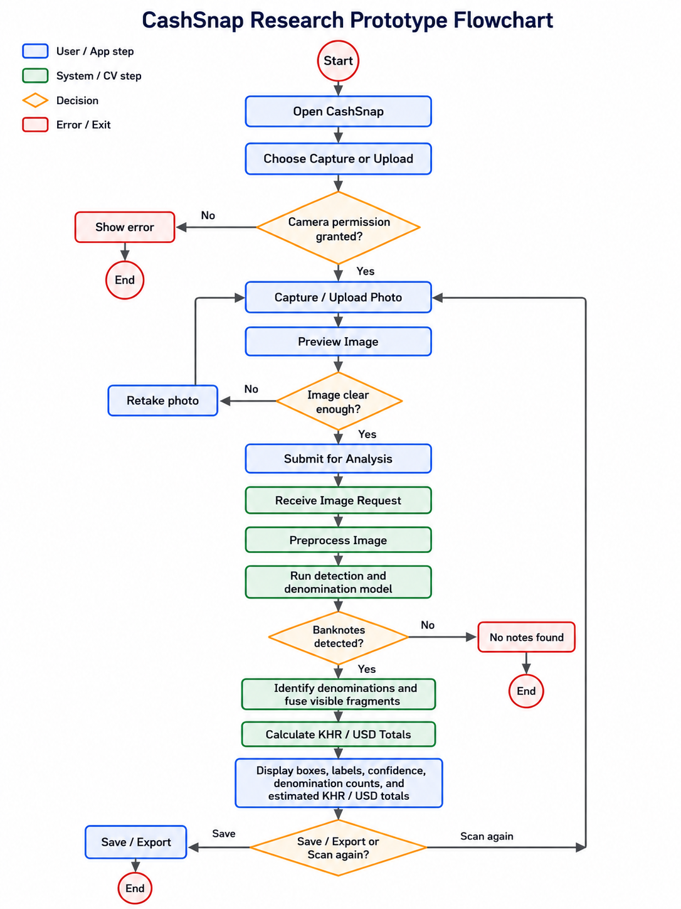
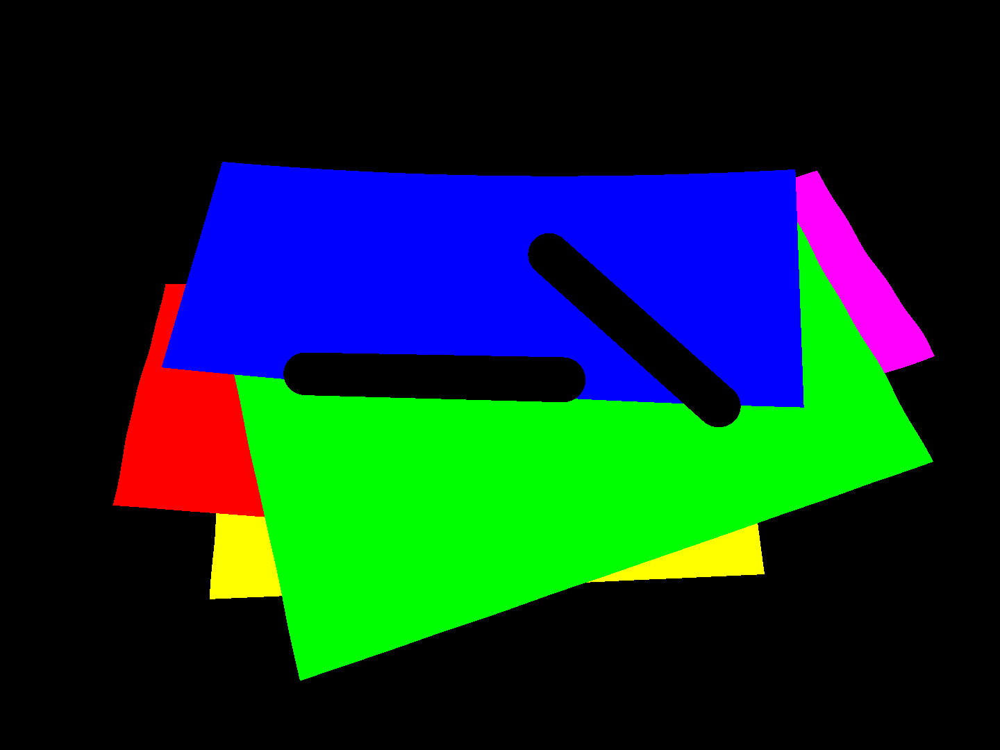
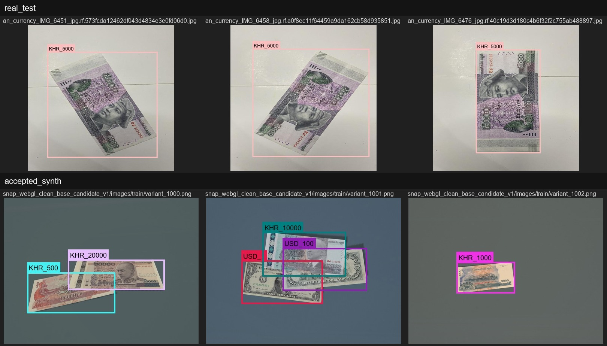
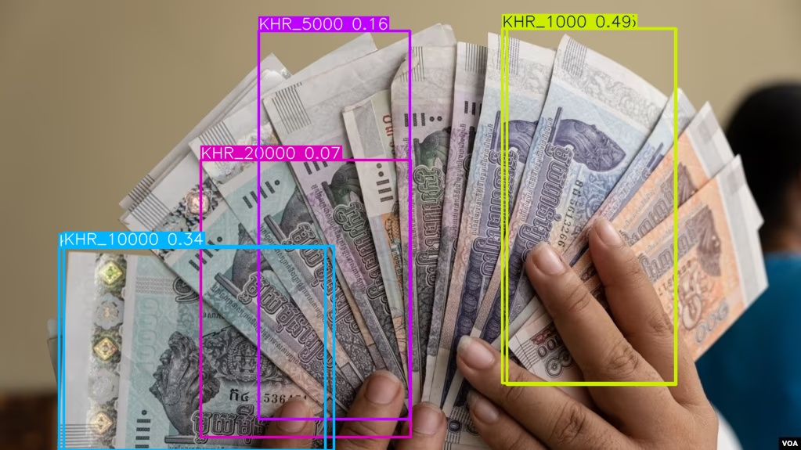
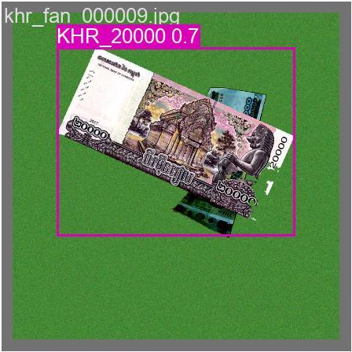
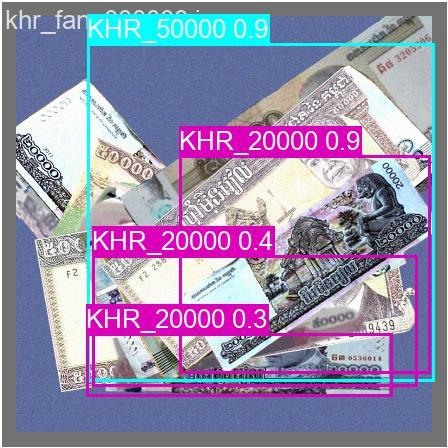

Riel Vision: Khmer/USD Cash Counting Assistant
1. Theme Choice
Riel Vision is an AI-assisted computer vision research prototype for counting mixed US Dollars (USD) and Khmer Riel (KHR) banknotes from casual phone or webcam photos. The practical target is a small convenience-store or cashier scanner: a user takes a photo of money, the system detects visible banknotes, recognizes denominations, and summarizes the estimated cash total. It is framed as a research and prototype project rather than a finished commercial product, because the hardest real-world cases still need more validation.
Unlike basic note detection demos that work mainly on clean, flat, single-note layouts, Riel Vision focuses on the difficult cases that appear in real counter photos:
- Overlapped Banknotes: Banknotes laid on top of each other, partially obscuring denomination designs.
- Fanned Stacks: Banknotes layered closely in fan geometries where only thin edges, numeric values, or border labels are exposed.
- Hand Occlusions: Fingers or hands may block denomination evidence while the user is holding or arranging cash.
- Circulation Wear: Banknotes that are wet, dirty, folded, crinkled, or low-contrast due to circulation.
- Negative distractors: Table tops, wallets, receipts, and coins that should not trigger false positive counts.

2. Project Requirement Document (PRD)
The following table outlines the minimum functional requirements for the Riel Vision application:
| Feature | Description | Purpose |
|---|---|---|
| Camera Capture | Captures high-resolution images of cash layouts using a phone camera or browser webcam. | Enable immediate cash layout capture. |
| Image Upload | Allows users to upload saved images (JPEG/PNG). | Support saved cash photos. |
| Image Preview | Displays the selected image on the interface before running model inference. | Allow checking photo clarity before analysis. |
| Banknote Detection | Runs YOLO object detection to propose bounding boxes of potential banknotes. | Locate individual notes in the frame. |
| Denomination Recognition | Identifies currency and denomination classes, such as USD_1, USD_50, KHR_5000, and KHR_50000. | Allow multi-currency value calculation. |
| Partial Note Rec. | Detects notes from partial evidence (slivers, corners, edges) when overlap exists. | Support counting in dense fanned stacks. |
| Fragment Fusion | Matches overlapping boxes using fragment fusion logic to avoid counting single notes twice. | Prevent overcounting from fragmented views. |
| Total Calculation | Calculates cash totals separately for USD and KHR. | Display clear multi-currency totals. |
| Confidence Display | Displays confidence scores and warns of low-confidence predictions. | Ensure transparency of count uncertainty. |
| Result Display | Superimposes colored bounding boxes, labels, and value counts on the image. | Make detection results understandable. |
| Error Handling | Gracefully logs API timeouts or camera permissions errors. | Provide a stable user interface. |
| Scan History | Maintains local transaction lists with CSV export functions. | Allow record-keeping and sharing. |
Non-Functional Requirements
- Accuracy: Minimizes double-counting of fanned notes while maintaining high recognition recall on visible banknote corners.
- Response Time: Cloud inference through the local computer vision model should return results within a few seconds; optional local deployment should also target a short response time.
- Privacy: Image data transfers are encrypted via HTTPS; API credentials are loaded strictly from secure `.env` files.
- Compatibility: Web layout renders smoothly on standard mobile browsers (Safari/Chrome) and desktops.
- Usability: Accessible high-contrast layout, single-click operations, and warnings on low-confidence outputs.
- Robustness: Standard fallback options to simulated Demo Mode if model servers are unreachable.
- Transparency: Displays warning messages and confidence ratings when banknote visibility is too low or blurry.
3. User Stories
- Shop Owner: "As a shop owner, I want to take a photo of mixed cash so that I can quickly count the total amount."
- Cashier: "As a cashier, I want the app to detect Khmer Riel and USD denominations so that I can separate totals by currency."
- Overlapped Handling: "As a user, I want the app to handle overlapped and fanned bills so that I do not need to arrange every note perfectly."
- Duplicate Prevention: "As a user, I want the app to avoid counting one physical bill multiple times so that visible fragments do not cause overcounting."
- Confidence Warning: "As a user, I want to see confidence scores and warning messages so that I know when the result may need manual checking."
- Image Quality Fallback: "As a user, I want to retake or upload another image when the photo is blurry so that the AI can produce a better result."
4. User Journey
The standard user journey consists of the following steps:
- User opens the Riel Vision prototype.
- User chooses Capture Image or Upload Image.
- App requests camera permission only if the user chooses camera capture.
- User captures or uploads a cash photo.
- App displays an image preview.
- User confirms the image or retakes/reuploads it if the photo is unclear.
- The prototype preprocesses the image for the computer vision model.
- The model detects visible banknotes and denomination evidence.
- The system groups visible fragments that may belong to the same physical bill.
- The app estimates count per denomination and total value by currency.
- The app displays boxes, labels, confidence scores, denomination totals, and the final estimated amount.
- User saves/exports the result, scans another image, or exits.
5. BPMN Diagram
The following BPMN-style diagram shows the research prototype flow. It separates the user/app interface from the computer vision processing system and avoids crossing lines so the data path is easy to follow.

6. Technologies Used
- Python: Main programming language for image processing, model inference, and prototype logic.
- OpenCV / Pillow: Used for reading images, resizing/preprocessing inputs, and drawing result overlays.
- Hugging Face API (Main): Cloud-based inference hosting for YOLOv8 object detection and 14-class YOLOv8 banknote detection.
- ONNX Runtime (Optional): Lightweight CPU inference engine for optional local offline deployment.
- Gemini CLI: Command-line interface tool used to query Google's Gemini models for code assistance, prompt validation, and documentation generation.
- Streamlit: Web application framework used to build the interactive user interface (running in
app.py). - NumPy / Pandas: Used for data handling, count tables, and result summaries.
- WebGL & Three.js Synthetic Renderer: Used to generate difficult money scenes, masks, label views, and visual QA examples for research.
7. Challenges and Limitations
Banknote counting under retail conditions is a complex spatial problem. The biggest challenge lies in **overlaps and fanning**: when notes are layered, a single note can appear as multiple disconnected fragments. Naive counting methods that treat every box as a distinct banknote will severely overcount.
To mitigate this, Riel Vision implements custom **fragment fusion logic**. In test suites like `probe_fragment_count_fusion.py`, naive counts resulted in an overcount of **+40** notes, whereas the same-class proposal fusion matched the true count of **60** physical bills.

Furthermore, banknote physical wear (stains, damp glossiness, folds, dirt) introduces domain noise. While WebGL synthetic data pre-training aids robustness, validation on real-world hand-fan layouts remains the critical next step. Riel Vision uses a domain gap validation harness (shown in Figure 5) to audit synthetic-to-real transfer maps.




8. Benchmarking and Dataset Inventory
To establish an honest measure of Riel Vision's performance in retail scenarios, the model was evaluated against two primary baselines instead of theoretical OCR engines or general scene-text models. Since there are no existing end-to-end Khmer banknote counting models, Riel Vision is directly compared to a generic public banknote detector and a real-only baseline trained without synthetic enhancements.
1. Benchmark Baselines
- Roboflow API Baseline: A pre-trained public banknote detection model hosted via the Roboflow Inference API. This represents the typical performance of public, crowd-sourced computer vision datasets. The inference API and model repository are hosted on Roboflow Universe.
- Base Model (Real Only): Our custom YOLOv8 model trained strictly on our scoured and audited dataset of 2,416 real-world retail cash photos. This model establishes a real-only training floor, highlighting where real data is insufficient.
2. Dataset Inventory
Riel Vision was trained and validated using a hybrid dataset combining scoured real-world photos with custom rendered synthetic images. The following sources were compiled, audited, and merged:
| Dataset / Source | Type | Size / Coverage | Source / Universe Link |
|---|---|---|---|
| Cambodia Currency Project | Real (KHR Denominations) | Compiled public photos | roboflow/cambodia-currency-project |
| Khmer-US-currency | Real (Mixed KHR & USD) | Compiled retail environments | roboflow/khmer-us-currency-jofw1 |
| KHMER SCAN | Real (KHR bank note scanning) | Scanned flat banknotes | roboflow/khmer-scan |
| cuurecy-detection-is | Real (Mixed segments & bounding boxes) | Southeast Asian banknotes | roboflow/cuurecy-detection-is |
| Currency Deteection | Real (KHR 100/1000/5000 denominations) | Audited Riel cash views | roboflow/currency-deteection |
| ASEAN currency detection | Real (Negatives & background environments) | Cluttered/empty background scenes | roboflow/currency-detection-y4tb2 |
| Banknote detection by valute | Real (USD context and adjacent classes) | Additional USD currency notes | roboflow/banknote-detection-2amdt-l24cn |
| Internal Real Dataset (cashsnap_v1) | Real (Merged and Audited Bounding Boxes) | 2,416 photos (1,011 validation, 833 test) | Internal curation from audited public sets & manual retail captures |
| Synthetic Dataset (cashsnap_webgl) | Synthetic (Stack, fan, occlusion rendering) | 3,096 WebGL rendered images | Generated via internal Three.js WebGL renderer (rendered stacks/fans) |
3. Performance Benchmarks
To verify the model under realistic retail conditions, the models were evaluated across three critical test set slices of varying complexity. The exact classification and detection accuracies are detailed below:
| Test Set Slices | Roboflow API Baseline | Base Model (Real Only) | Riel Vision (Real + Synth) |
|---|---|---|---|
| Easy / Clean (separated, flat bills) | 48.5% | 48.6% | 92.3% |
| Partially Blocked (hand/finger occlusions) | 0.0% | 1.0% | 93.6% |
| Overlapping (stacked/piled bills) | 1.6% | 6.0% | 56.6% |
- Where Roboflow & Base Models Fail: Standard models fail completely on occlusions and overlaps (0.0% to 6.0% accuracy). Because their training data consists almost entirely of isolated, flat banknotes, they are blind to notes that are partially hidden or layered.
- Where Hybrid Training Wins: Riel Vision achieves 93.6% on partially blocked notes and 92.3% on easy, clean notes, showing that synthetic Three.js renders successfully teach the model to recognize banknote boundaries even when blocked by hands or fingers.
- Remaining Challenges: Accurate counting of overlapping stacks remains a major challenge, scoring 56.6%. When notes are deeply fanned, only minor border fragments are visible, which continues to cause missed or merged count proposals.
Benchmark Bias Note: These metrics are evaluated on static local validation slices representing specific retail conditions. Real-world performance under arbitrary smartphone cameras and uncontrolled environments will vary depending on lighting, reflections, and extreme pile depth.
9. Conclusion
Riel Vision is best framed as a computer vision research prototype for convenience-store and cashier cash-counting scenarios. Its goal is not to replace careful human verification, but to explore whether a camera-based scanner can estimate mixed KHR/USD cash totals from realistic photos.
The most important research problem is not clean single-note detection. The hard part is partial-note counting: overlapped notes, fanned stacks, hand occlusion, thin visible edges, and repeated denominations can cause one physical bill to appear as multiple visible fragments. Riel Vision addresses this by combining denomination recognition with fragment-fusion logic and honest confidence display.
The current system is promising as a prototype and synthetic-data research pipeline, but real fan/overlap/hand validation remains the next major proof before it can be considered reliable for everyday store use.